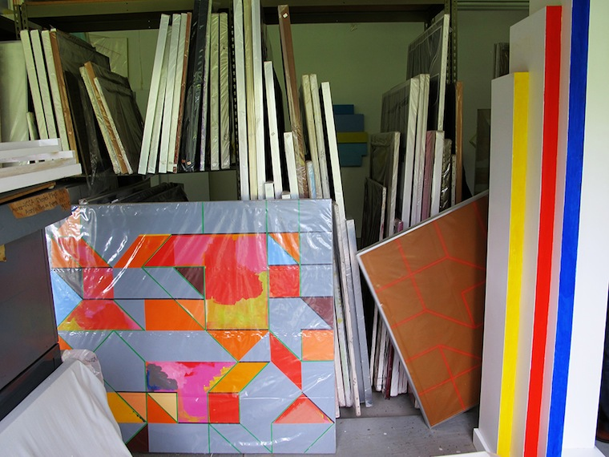
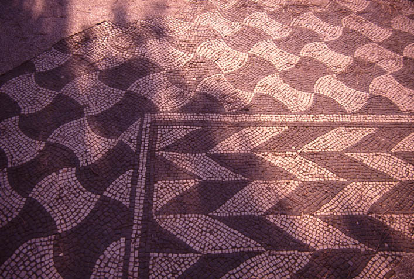

What is the relationship of Rubello's work to optical illusion? Optical illusions, which explore the tendency of the mind to complete the incomplete, prioritize a kind of revelation, but in Color Cubes, nothing, finally, is made clear. Its truth is flux, not revelation. The cubes are never really cubes at all. The "a-ha" is transfigured into a kind of suspended, electric awareness.
But Rubello's art shares with illusion a special concern for the magic acts made possible by visual perception.
"The works of David Rubello," writes Diane Kirkpatrick, "express the wonder of human perception….They experiment with two-dimensional space, three-dimensional space, and the wondrous world of illusionism for the painter in the interplay between the two."14
The quality of perceptual play or "flippability" in Color Cubes and its cousins has antecedents in 20th century art (Escher , Albers , a host of Op artists ), but Rubello traces it much farther back: to ancient Roman mosaics he first encountered in the early 1960s.
See COLOR CUBES , INTERACTION , IRRATIONAL GEOMETRY , MOVEMENT , and PERSPECTIVE .